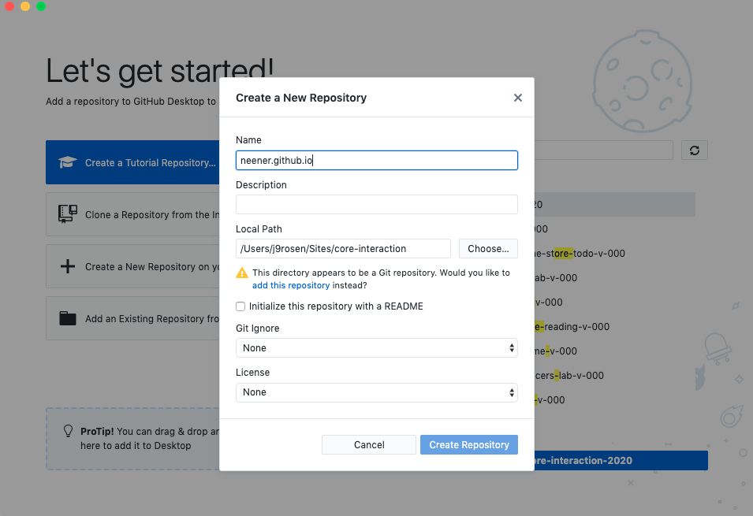

~Cool we're IN~ Let's put some html into our /core-lab/index.html file and make our first site!
Github Desktop (GUI)
Click 'Create a new repository on your Hard Drive...'

Name the repository your github username. My username is neener so my repository name is neener.github.io
The 'Local Path' should be directed to the file you made earlier Sites/core-lab/
Click 'Create Repository'
A repository or "repo" for short, is a digital directory or storage space where you can access your project, its files, and all the versions of its files that Git saves.
We name our repo by our github user name because we will utitilize GitHub Pages to host our site.
Choose 6 business cards and translate them into 5 additional index.html pages in your Sites/core-lab/week-1 directory.
Experiment with new html tags ( use atleast 10 ), focus on heirarchy.
Take note of how different HTML elements interact with each other, ie. notice the padding and margins that come with each element, which elements create a new line break?
Take time to properly indent your code so it’s easy to read and easier to debug!